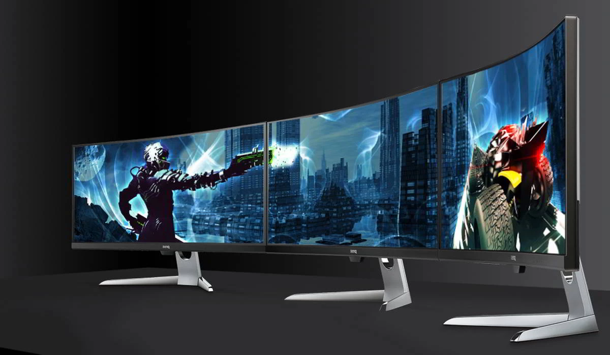

Oltre all'hardware principale, ci sono molti accessori che possono migliorare l’esperienza di gioco su PC. Tastiere meccaniche, mouse ad alta precisione, cuffie con surround sound, e monitor ad alta frequenza di aggiornamento sono solo alcune delle periferiche che fanno la differenza in una sessione di gaming. Una sedia ergonomica e una scrivania stabile completano la configurazione per lunghi periodi di gioco in totale comfort. In questa sezione, esploreremo i migliori accessori e periferiche per PC gaming e come scegliere quelli giusti per il tuo setup.
